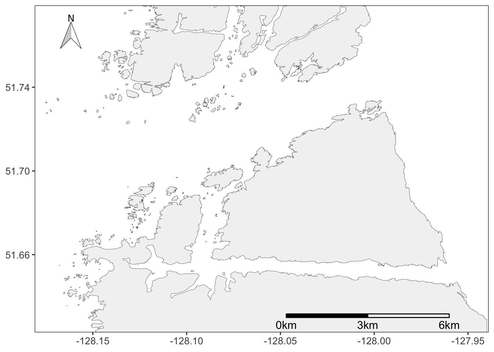
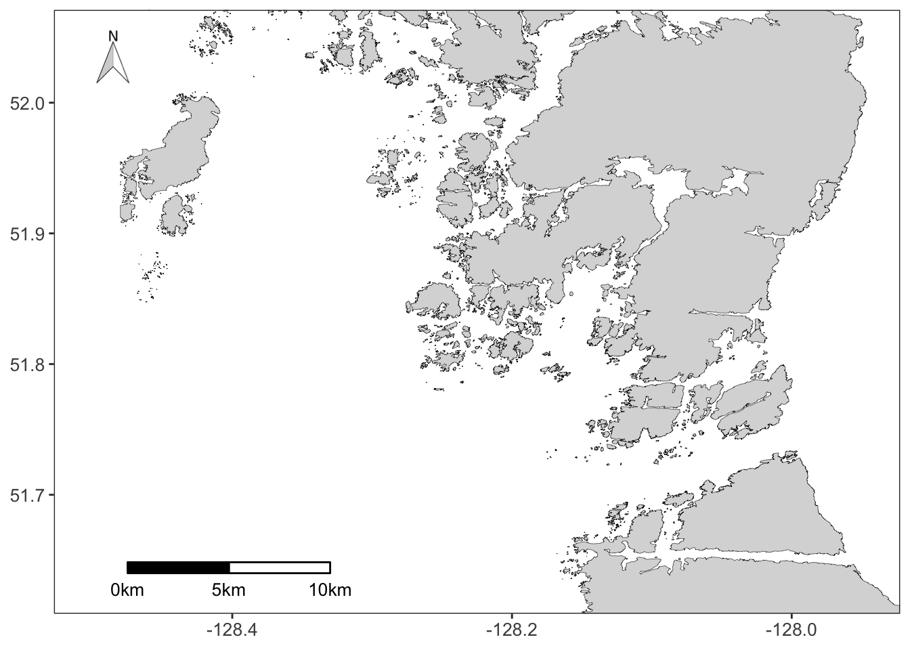
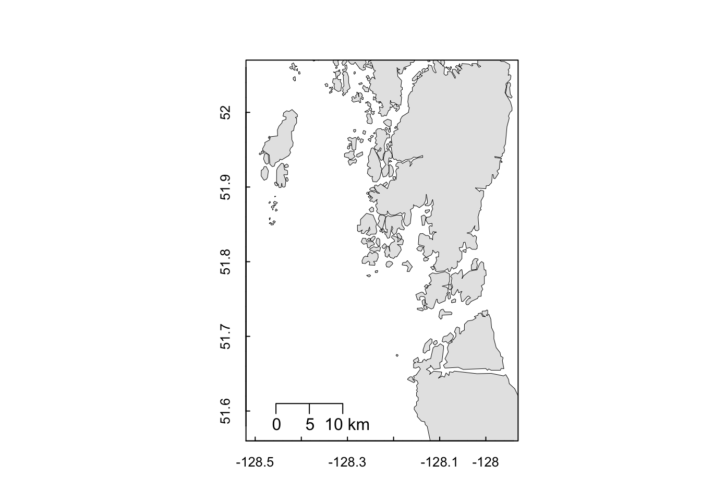
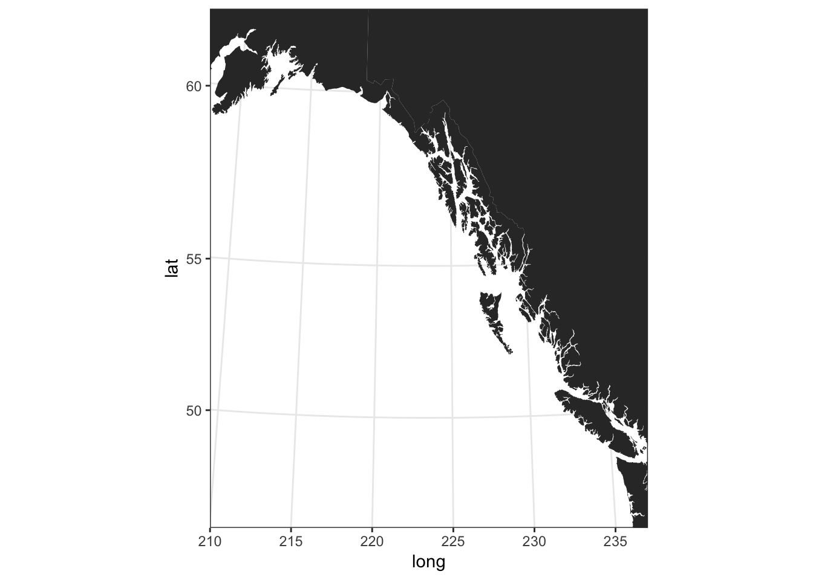
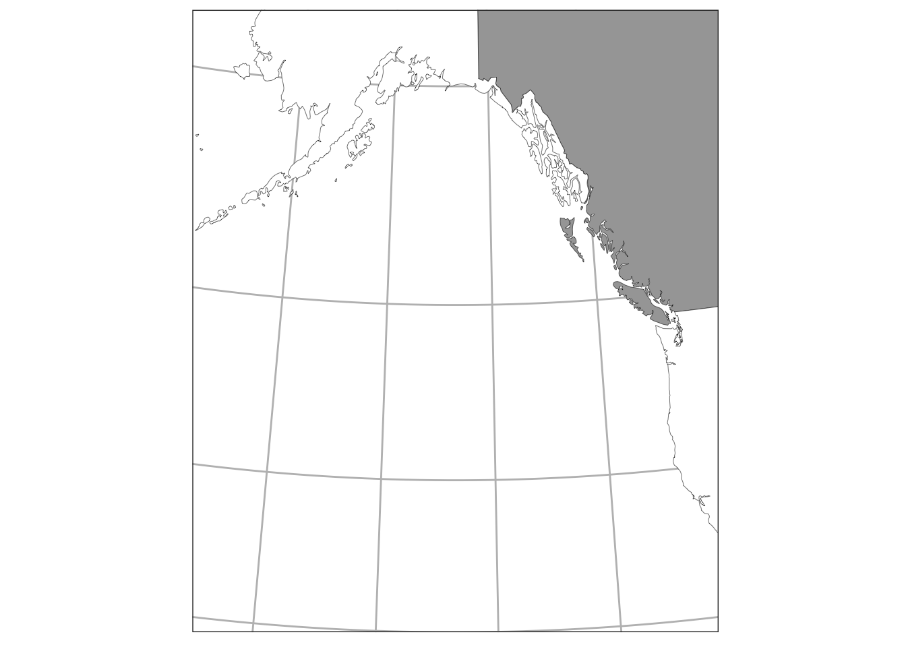
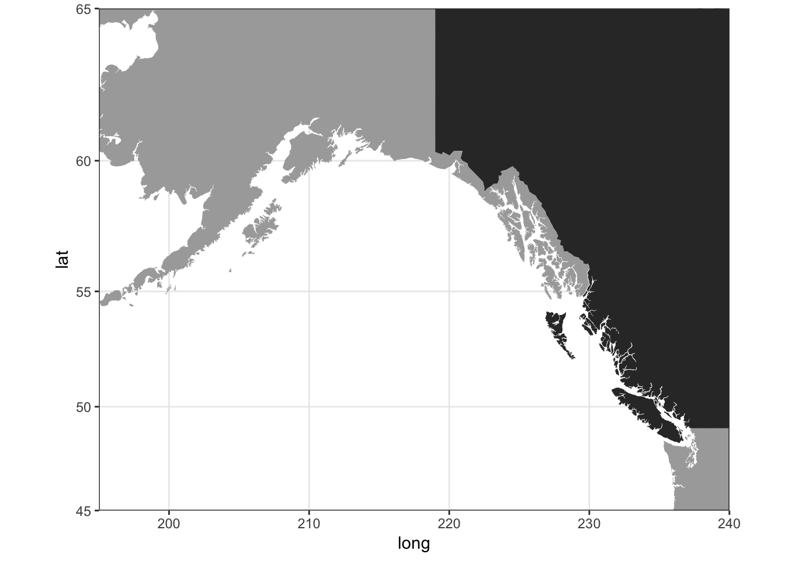
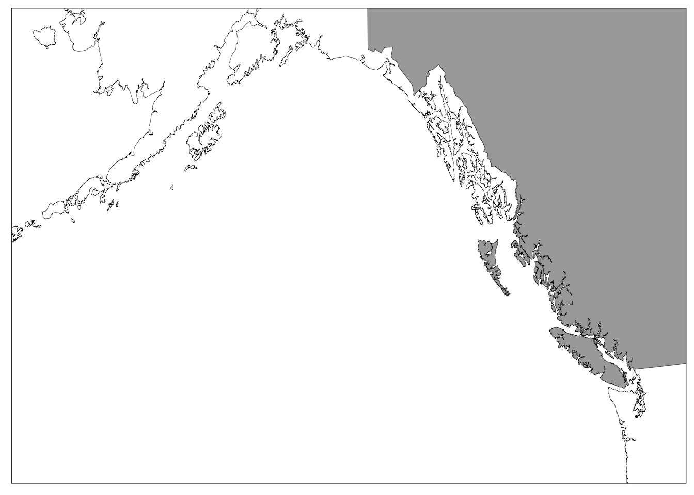

Chapter 7 Mapping in R
7.1 Site Maps
Section Contributors:
- Dr. Daniel Okamoto
- Jenn Burt
A common task amongst most field researchers is the need to make a basic site map to describe the location of your sampling. Using Arc GIS is the most common way to produce maps at Hakai, but sometimes a simple solution that could be implemented in R is desired.
For a high resolution map with the resolution needed to see detailed coastline features you can use the following code and shapefile. To get this to work on your computer, download the shape file and put it in a R Studio project sub-folder called data.
knitr::opts_chunk$set(message = FALSE, warning = FALSE)
###################################################### #
### Script to make a BC map ### #
### Author: D.K. Okamoto (modified by Jenn Burt) ### #
###################################################### #
# Libraries needed to run this code
library(raster)
library(maps)
library(mapdata)
library(maptools)
library(rgeos)
library(rgdal)
library(ggplot2)
library(ggsn)
library(tidyverse)
library(here)7.1.1 High Resolution Maps
The high resolution map used here requires that you download a set of ESRI shape files from this book’s GitHUB repository. Those files can be downloaded from the 2_Shapefile folder here. Put the 2_Shapefile folder into the data folder of your R-Studio project.
This script assumes you are using the here() package in conjunction with R-Studio projects to obviate setting your working directory. See chapter 5 and the sub-section about the here() package to read more.
############## Make a map with sites ##################
########## Using high resolution shapefile ################
BC.shp <- readOGR(here("data","2_Shapefile", "COAST_TEST2.shp"))## OGR data source with driver: ESRI Shapefile
## Source: "/Users/brett.johnson/Documents/Projects/R-guide/data/2_Shapefile/COAST_TEST2.shp", layer: "COAST_TEST2"
## with 1 features
## It has 5 fields### chose the lat/long extent you want to show
Ncalvert <- extent(-128.18, -127.94, 51.61, 51.78)
### crop your shapefile polygons to the extent defined
# takes a moment to run (patience grasshopper)
BC.shp2 <- crop(BC.shp,Ncalvert)
### project and fortify (i.e. turn into a dataframe)
BC.df <- fortify(BC.shp2)
# (IF DESIRED) Load .csv file with your specific study site lat/longs
# this file is a dataframe with 4 columns: site_name, otterOcc(Y or N), lat, long
# EXPTsites <- read.csv("/Users/jennb/Dropbox/Simple_BC_map/EXPTsites.csv", header = T)
# Jenn graph
# here is where you can see the styles of north arrow (scroll to bottom): http://oswaldosantos.github.io/ggsn/
# the high resolution shape file works well at this scale as it gives lots of the coastline detail
ggplot()+ theme_bw()+
geom_polygon(data= BC.df, aes(x=long,y=lat,group= group),
colour= "black", size=0.1, fill='grey95')+
coord_cartesian(xlim = c(-128.17, -127.95), ylim=c(51.63, 51.772)) +
#geom_point(data=EXPTsites, aes(x=long, y=lat, shape=otter), size=4, colour="blue", stroke=1.5)+ #add this to plot site locations
#scale_shape_manual(values=c(21,24))+ #this makes different shapes for otter "yes" and otter "no" sites
scalebar(BC.df, dist = 3, st.size=4, height=0.01, dd2km = TRUE, model = 'WGS84', anchor = c(x = -127.96, y = 51.63))+
north(data = BC.df, scale = 0.1, symbol = 3, anchor= c(x = -128.15, y = 51.775)) +
theme(panel.grid.minor = element_line(colour = NA),
panel.grid.major = element_line(colour = NA),
axis.title.y= element_blank(), axis.title.x = element_blank(),
axis.text.y= element_text(size=10), axis.text.x = element_text(size=10))
### if you want to make a larger Central coast map, just change the extent selected
CCoast <- extent(-128.48, -127.9, 51.5, 52.1)
# crop the map to the new extent
CC.shp2 <- crop(BC.shp,CCoast)
# fortify
CC.df <- fortify(CC.shp2)
# Jenn graph
fig1 <- ggplot()+ theme_bw()+
geom_polygon(data= CC.df, aes(x=long,y=lat,group= group),
colour= "black", size=0.1, fill='grey85')+
coord_cartesian(xlim = c(-128.5, -127.95), ylim=c(51.63, 52.05)) +
#geom_point(data=EXPTsites, aes(x=long, y=lat, shape=otter), size=3.3, colour="blue", stroke=1.3)+ #add this to plot site locations
#scale_shape_manual(values=c(21,24))+ #this makes different shapes for otter "yes" and otter "no" sites
scale_x_continuous(breaks=c(-128.4, -128.2, -128.0))+
scalebar(CC.df, dist = 5, st.size=3.5, height=0.014, dd2km = TRUE, model = 'WGS84', anchor = c(x = -128.33, y = 51.64))+
north(data = CC.df, scale = 0.07, symbol = 3, anchor= c(x = -128.465, y = 52.056)) +
theme(panel.grid.minor = element_line(colour = NA),
panel.grid.major = element_line(colour = NA),
axis.title.y= element_blank(), axis.title.x = element_blank(),
axis.text.y= element_text(size=10), axis.text.x = element_text(size=10),
legend.position = "none"); fig1
#I use this code to export a nice PDF file of specific dimensions.
cairo_pdf("Fig1.pdf", width=4, height=5)
print(fig1)
dev.off()## quartz_off_screen
## 27.1.2 Medium Resolution PBS Mapping Package
The Pacific Biological Station in Nanaimo has put together a mapping package that contains some medium resolution files of the Pacific Coast.
############## Make a map with the sites ################## #
############# Using DFO coastline data file ################
#this is lower resolution than the shapefile above
library(PBSmapping)
## Plot the map
data(nepacLLhigh) # DFO BC Coastline data - high resolution
plotMap(nepacLLhigh, xlim=c(-128.52, -127.93), ylim=c(51.56, 52.07), col="grey90", bg="white", tckMinor = 0,
xlab="", ylab="", lwd=0.5)
box()
#add a scale bar
map.scale(x=-128.455, y=51.61, ratio=FALSE, relwidth=0.2)
#
# # add site points
# points(EXPTsites$long, EXPTsites$lat, cex=1.5, pch=20, size=2)7.1.3 Low Resolution Pacifc Coast Maps
For lower resolution maps to represent larger scales you can use the maps from the maps and mapdata packages.
############## Pacific Coast Map ##################
################################################### #
#creata a data file to make a basemap
# this database has a lower resolution (which is fine for large scale map)
m <- map_data("world", c("usa", "Canada"))
#this database has a way higher resolution
d <- map_data("worldHires", c("Canada", "usa", "Mexico"))
#make a basic map, all one colour
# play around with xlim and ylim to change the extent
ggplot() + geom_polygon(data = d, aes(x=long, y = lat, group = group)) + theme_bw()+
coord_map("conic", lat0 = 18, xlim=c(210, 237), ylim=c(46,62))
# Make different colours for Alaska and USA and Canada
## I have tried to figure out how to get the Provinces borders to show, to no avail... if someone else has code for this, share!
ggplot() +
geom_polygon(data = subset(m, region=="Canada"), aes(x=long, y = lat, group = group), fill="grey65", colour="black", size=.1) + theme_bw()+
geom_polygon(data = subset(m, region=="USA"), aes(x=long, y = lat, group = group), fill="white", colour="black", size=.1) +
#geom_polygon(data = subset(d, region=="Mexico"), aes(x=long, y = lat, group = group), fill="white", colour="black", size=.1) +
coord_map("conic", lat0 = 18, xlim=c(195, 238), ylim=c(30,62.5))+
theme(panel.grid.minor = element_blank(),
panel.grid.major = element_line(colour = "grey"), #change "grey" to NA to remove
axis.title= element_blank(),
axis.text= element_blank(),
axis.ticks = element_blank())
# playing with extent and colour
ggplot() +
geom_polygon(data = subset(d, region=="Canada"), aes(x=long, y = lat, group = group)) +
geom_polygon(data = subset(d, region=="USA"), aes(x=long, y = lat, group = group), fill="darkgrey") +
coord_map(xlim=c(195, 240), ylim=c(45,65))+
theme_bw()
# here you can see that if you use the other dataframe "d" the resolution is much higher.
# this is good for smaller chunks of the BC coast, but less good for a PNW map
ggplot() +
geom_polygon(data = subset(d, region=="Canada"), aes(x=long, y = lat, group = group), fill="darkgrey", colour="black", size=.1) + theme_bw()+
geom_polygon(data = subset(d, region=="USA"), aes(x=long, y = lat, group = group), fill="white", colour="black", size=.1) +
#geom_polygon(data = subset(d, region=="Mexico"), aes(x=long, y = lat, group = group), fill="white", colour="black", size=.1) +
coord_map("conic", lat0 = 18, xlim=c(195, 240), ylim=c(45,61))+
theme(panel.grid.minor = element_line(colour = NA),
panel.grid.major = element_line(colour = NA),
axis.title= element_blank(),
axis.text= element_blank(),
axis.ticks = element_blank())
7.2 Interactive Maps with Leaflet
It is possible to use the Javascript based widget known as Leaflet from within R which is great for making interactive maps in an interactive R Markdown document, as well as in Shiny apps. You can use basemaps that Hakai hosts from the ArcGIS Online Server (AGOL), or you can use the basic maps that are provided. You are able to add points, visualize heat maps, legends, cloropleths, and other simple GIS tasks.
To do this from R you need to install these packages:
# The package that allows you add leaflet map widgets to your interactive web documents:
install.packages('leaflet')
# The package that allows you to use map tiles from Hakai's AGOL
install.packages('leaflet.esri')Example:
library(leaflet)
library(leaflet.esri)
library(magrittr)
leaflet() %>%
# Set the default lat and long and zoom level
setView(lng = -126, lat = 50.3601, zoom = 7) %>%
# Add default tile
addTiles() %>%
# Add tile from Hakai AGOL
addEsriTiledMapLayer(url = "https://ags.hakai.org:6443/arcgis/rest/services/AGOL_basemaps/Marine_charts/MapServer")Follow the instructions on R-Studio’s Leaflet package webpage to create your map. The included basemaps can be viewed here
To use the basemaps on Hakai’s AGOL server use the addEsriTiledMapLayer() function from the esri.leaflet package where the documentation can be read here
Hakai ArcGIS Online maps can be viewed here. You can first view any of these basemaps in AGOL to decide which you’d like to use. Once you’ve decided, you simply copy the URL and paste it into the addEsriTileMapLayer() function
Example:
library(leaflet)
library(leaflet.esri)
library(magrittr)
leaflet() %>%
# Set the default lat and long and zoom level
setView(lng = -126, lat = 50.3601, zoom = 7) %>%
# Add default tile
addTiles() %>%
# Add tile from Hakai AGOL
addEsriTiledMapLayer(url = "https://ags.hakai.org:6443/arcgis/rest/services/AGOL_basemaps/Marine_charts/MapServer")